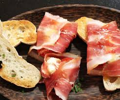
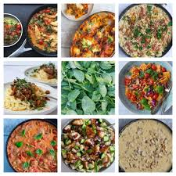

Drikkevarer

- Dolce Pesca Ice Tea| sød iste med ferskensmag
- Limonata Frizzante| syrlig citronbrus med italiensk twist
- Acqua Minerale| kildevand, stille eller med brus
- Frizzante Menta| forfriskende danskvand med mynte
- Birra Piccola| lille fadøl, let og gylden
- Cola Fresca| klassisk, boblende sodavand
- Arancia Rossa| iskold rød appelsinsodavand
Forretter
- Bruschetta Classico | ristet brød med tomat, basilikum og olivenolie
- Focaccia al Rosmarino | lun focaccia med havsalt og frisk rosmarin
- Mozzarella Fritta | sprødstegt mozzarella med mild tomatsauce
- Olive Miste | marinerede oliven med krydderurter
- Carpaccio di Manzo | tynde skiver oksekød med parmesan og rucola
- Calamari Dorati | sprøde friturestegte blæksprutteringe med citron
- Antipasto della Casa | udvalg af ost, skinke og grillede grøntsager
Pizzaer

Special offers: * Buy 2 family or 4 standard pizzas and get one 1½ liter Cola FREE. * Buy 2 pizzas and get one serving of tzatziki FREE on pick-up.
- Margarita (Tomato, Cheese)
- Hawaii (Tomato, Cheese, Ham, Pineapple)
- Milano (Tomato, cheese, Ham, Mushrooms)
- Mamma Mia(Tomato, cheese, Ham, Pepperoni, Onions)
- Pepperoni (Tomato, Cheese, Pepperoni, Pineapple)
Pastaretter
- Husets Special
- Italian style
- Carbonara
- Rød Pesto
- Grøn Pesto